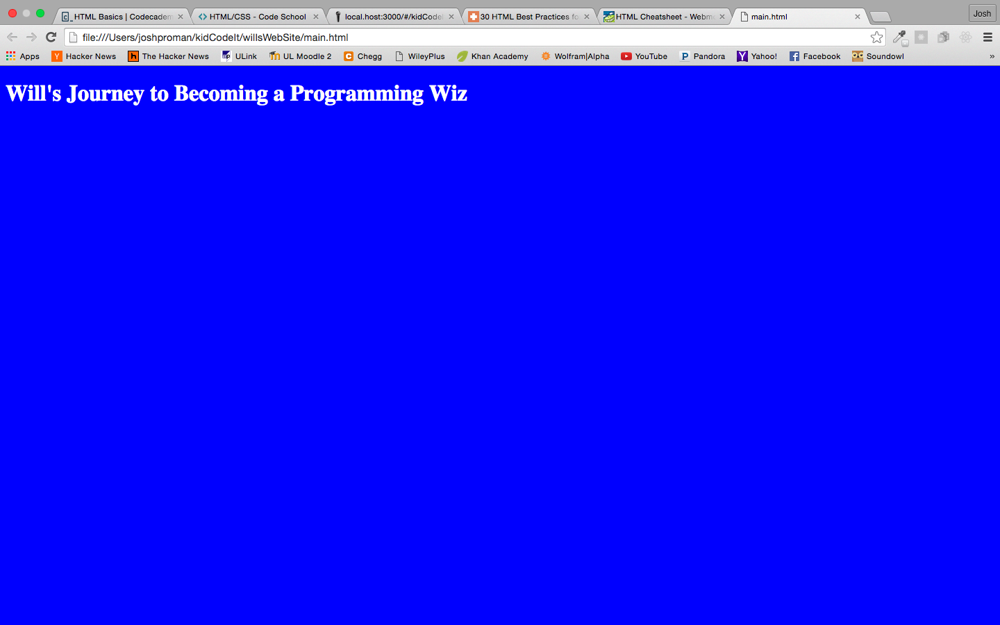
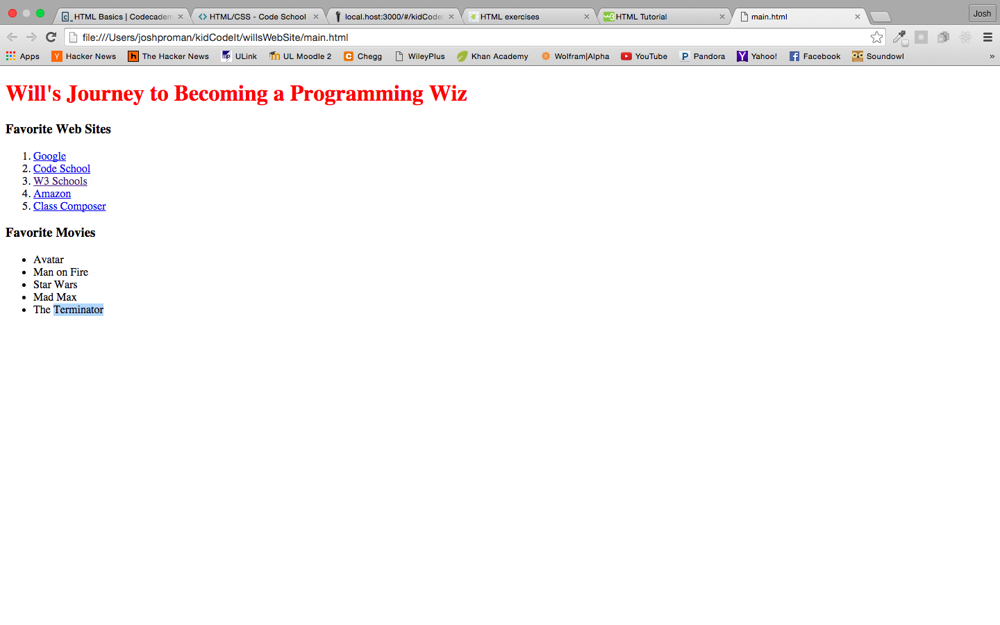
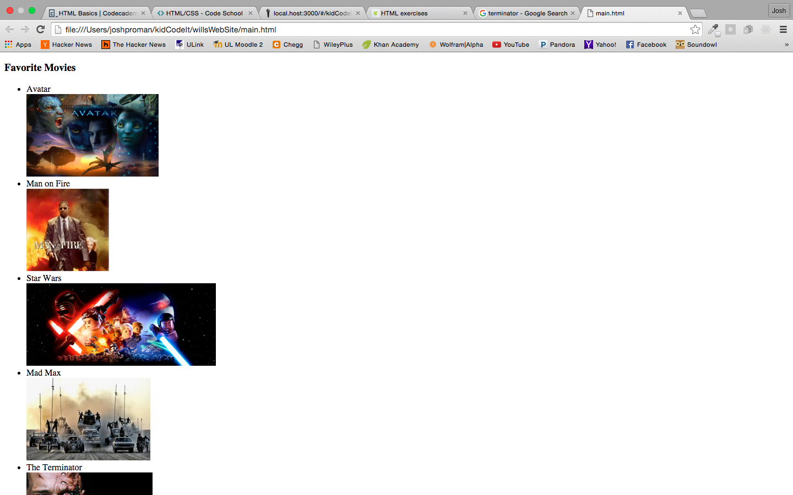

Hello Will!
Let's get to coding.
Useful links:
****Please use the Google Chrome browser for all problems!
1: Set up a blank HTML document that links to a CSS stylesheet.
The main goal of this problem is to successfully set up an HTML page that links to a CSS stylesheet.
The result should look similar to this when you open it in the browser:

2: Using ordered lists, unordered list, and linking to other websites using <a href="http://urlOfWebSite.com">Website Name</a>.
This exercise will get you used to creating lists as well as linking to other web sites.
- Create an ordered list <ol></ol> of your top 5 favorite web sites and link to each site using the <a href=""></a> tag.
- Create an unordered list <ul></ul> of a few of your favorite movies.
- Creat a <h3></h3> header for each list.
The result should look similar to this when you open it in the browser:

3: Add images to each movie title in your unordered list.
This exercise will get you used to downloading images from the web and using them in your personal site.
- Use google to search for a image related to your first movie title.
- When you find an image you would like to use download it by right clicking on the image and click on "Save image as...". Make sure to rename the image to whatever you like and save it into your Kide Code It folder.
- Inside of your first <li></li>, place an <img src="./imageName.jpg"> to link to your image.
- Now let's make the images appear under their title by wrapping them in a <div></div> tag like this <div><img src="./imageName.jpg"></div>.
- Repeat these steps for all 5 movie titles.
The result should look similar to this when you open it in the browser:
